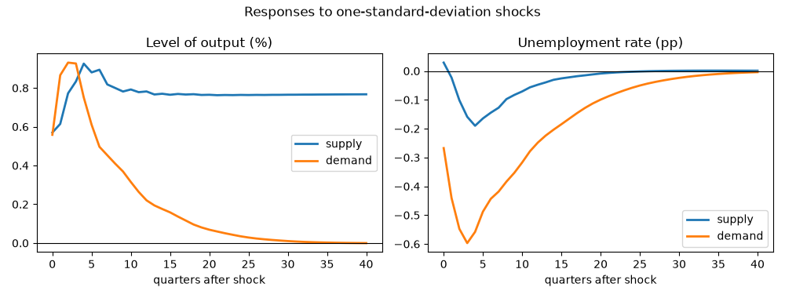
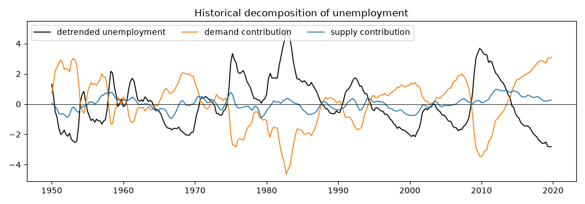

Note
Go to the end to download the full example code.
Supply and demand shocks with long-run restrictions#
Blanchard and Quah (1989) identify aggregate supply and demand shocks in a bivariate system of output growth and unemployment from one restriction at the infinite horizon: demand shocks have no permanent effect on the level of output. Nothing is assumed about impact timing, which is what makes the scheme a natural counterpart to the recursive one.
The restriction only makes sense if output is integrated of order one and unemployment is stationary, so the exercise begins with unit-root tests rather than with the VAR. It then applies the paper’s two pre-treatments – a break in mean growth in 1974 and a linear trend in unemployment – fits the system, identifies, and reads the cumulated responses and the variance shares.
Data#
Real GDP (chained 2017 dollars) and the civilian unemployment rate,
quarterly, 1948Q1 to 2019Q4. Growth is the continuously compounded
quarterly percent change, units="cch" on FRED’s side, so the level
of output is the cumulated sum of the series.
import matplotlib.pyplot as plt
import numpy as np
from cultivars.diagnostics.unit_roots import adf, kpss
from cultivars.multivariate.reduced_form.vector_autoregression import VAR
from cultivars.multivariate.structural.zero_restrictions import LongRunSVAR
from _fred import fetch
raw = fetch(
{"gdp": "GDPC1", "u": "UNRATE"},
start="1947-10-01",
end="2019-12-01",
frequency="q",
aggregation_method="avg",
units={"gdp": "cch"},
)
print(raw.tail())
gdp u
date
2018-10-01 0.14154 3.8
2019-01-01 0.62238 3.9
2019-04-01 0.83168 3.6
2019-07-01 1.16321 3.6
2019-10-01 0.67956 3.6
Integration orders#
The long-run restriction needs output growth to be stationary (so the level has a unit root) and unemployment to be stationary in levels. ADF tests the unit-root null; KPSS tests the stationarity null. Reading them together is the standard check: a series that ADF rejects and KPSS does not is comfortably I(0).
for name, series, trend in (("gdp growth", raw["gdp"], "c"), ("unemployment", raw["u"], "c")):
unit_root = adf(series.to_numpy(), trend=trend)
stationary = kpss(series.to_numpy(), trend=trend)
print(
f"{name:14s} ADF {unit_root.statistic:7.3f} (p={unit_root.pvalue:.3f}, "
f"reject unit root: {unit_root.reject()}) KPSS {stationary.statistic:6.3f} "
f"(reject stationarity: {stationary.reject()})"
)
level = adf(np.cumsum(raw["gdp"].to_numpy()), trend="ct")
print(f"log GDP level ADF {level.statistic:7.3f} (p={level.pvalue:.3f}) with trend")
gdp growth ADF -5.337 (p=0.000, reject unit root: True) KPSS 0.449 (reject stationarity: False)
unemployment ADF -2.924 (p=0.043, reject unit root: True) KPSS 0.558 (reject stationarity: True)
log GDP level ADF -1.046 (p=0.938) with trend
The paper’s pre-treatment#
Blanchard and Quah demean growth separately before and after 1974Q1, where mean growth fell, and remove a linear trend from unemployment. Both adjustments are deterministic and leave the shocks untouched; they keep the VAR from spending its lags on a mean shift.
data = raw.copy()
post = data.index >= "1974-01-01"
data.loc[~post, "gdp"] -= data.loc[~post, "gdp"].mean()
data.loc[post, "gdp"] -= data.loc[post, "gdp"].mean()
t = np.arange(len(data), dtype=float)
coefficients = np.polyfit(t, data["u"].to_numpy(), 1)
data["u"] -= np.polyval(coefficients, t)
names = ("dy", "u")
endog = data.to_numpy()
Reduced form#
The paper uses eight lags; the criteria below say how much of that the data support. The long-run factorization requires a stationary system, so the stability check is not optional here: a root near one would make the long-run multiplier matrix ill-conditioned.
selection = VAR(endog, order=1, names=names).lag_order_selection(max_lags=10)
print(selection.to_table())
var = VAR(endog, order=8, trend="n", names=names).fit()
stability = var.stability_check()
print(f"Largest companion root {stability.max_modulus:.3f}; stable: {stability.is_stable}")
Lag order selection
================================================================================
Observations: 278 Maximum lags: 10
Consensus: none
--------------------------------------------------------------------------------
p AIC BIC HQIC FPE
0 0.7015 0.7276 0.7120 2.0168
1 -3.2906 -3.2123 -3.2592 0.0372
2 -3.4751 -3.3446* -3.4228* 0.0310
3 -3.4958* -3.3131 -3.4225 0.0303*
4 -3.4723 -3.2374 -3.3781 0.0310
5 -3.4634 -3.1763 -3.3482 0.0313
6 -3.4805 -3.1412 -3.3444 0.0308
7 -3.4675 -3.0761 -3.3105 0.0312
8 -3.4644 -3.0208 -3.2864 0.0313
9 -3.4739 -2.9781 -3.2750 0.0310
10 -3.4909 -2.9429 -3.2711 0.0305
================================================================================
An asterisk marks each criterion's minimum. Every order was scored on the same
sample, so entries within a column are comparable; FPE is on a determinant
scale, so entries across columns are not.
Largest companion root 0.877; stable: True
Long-run identification#
order=("dy", "u") declares output growth as the variable whose level
only the first shock moves permanently. The first shock is therefore
supply; the second, which has no long-run effect on output, is demand.
The factorization normalizes both shocks to a positive long-run effect
on their own variable, which for demand means a positive effect on
unemployment; we flip that column so a demand shock is expansionary.
svar = LongRunSVAR(var, order=names).identify()
print(svar.summary())
print("Long-run impact (rows: dy, u; columns: supply, demand):")
print(svar.long_run_impact.round(3))
horizon = 40
irf = svar.irf(horizon)
cumulative = svar.irf(horizon, cumulative=True)
sign = np.ones(2)
if irf[0, 0, 1] < 0:
sign[1] = -1.0
irf = irf * sign
cumulative = cumulative * sign
Structural VAR (long-run)
================================================================================
Scheme: long-run Identified shocks: 2 of 2
Variables: 2 Observations: 280
--------------------------------------------------------------------------------
impact of dy u
dy 0.5701 -0.5584
u 0.0290 0.2675
================================================================================
Long-run triangularity in the ordering dy -> u: each shock has no permanent
effect on the variables before its position. The restriction binds cumulated
responses, so on differenced data it restricts levels.
Shocks are normalized to unit variance, so impact-column entries are responses
to a one-standard-deviation structural shock.
Long-run impact (rows: dy, u; columns: supply, demand):
[[ 0.769 0. ]
[-1.408 7.227]]
Cumulated responses#
The output panel plots the cumulated response of growth, which is the response of the level. The demand response must return to zero; that is the restriction, not a finding. The supply response settles at the long-run impact. The unemployment panel is the response of the level directly.
fig, axes = plt.subplots(1, 2, figsize=(10, 3.8))
steps = np.arange(horizon + 1)
for j, shock in enumerate(("supply", "demand")):
axes[0].plot(steps, cumulative[:, 0, j], lw=2, label=shock)
axes[1].plot(steps, irf[:, 1, j], lw=2, label=shock)
axes[0].axhline(0.0, color="k", lw=0.8)
axes[1].axhline(0.0, color="k", lw=0.8)
axes[0].set_title("Level of output (%)")
axes[1].set_title("Unemployment rate (pp)")
for ax in axes:
ax.set_xlabel("quarters after shock")
ax.legend()
fig.suptitle("Responses to one-standard-deviation shocks")
fig.tight_layout()

Historical decomposition#
The decomposition attributes the deviation of unemployment from its deterministic path to the two shocks. The paper’s reading is that recessions are predominantly demand events, with the 1974-75 episode the one where supply plays a visible role.
decomposition = svar.historical_decomposition() * sign
dates = data.index[var.order :]
fig, ax = plt.subplots(figsize=(10, 3.5))
ax.plot(dates, data["u"].to_numpy()[var.order :], color="k", lw=1.2, label="detrended unemployment")
ax.plot(dates, decomposition[:, 1, 1], color="C1", lw=1.2, label="demand contribution")
ax.plot(dates, decomposition[:, 1, 0], color="C0", lw=1.2, label="supply contribution")
ax.axhline(0.0, color="k", lw=0.6)
ax.legend(loc="upper left", ncol=3)
ax.set_title("Historical decomposition of unemployment")
fig.tight_layout()

What to take away#
Long-run restrictions buy identification without timing assumptions, at the price of estimating an infinite-horizon object from a finite sample: the long-run multiplier is a ratio of sums of VAR coefficients, and Faust and Leeper (1997) show how little the data say about it when the roots are large. The stability check and the size of the largest root are the first thing to report alongside any Blanchard-Quah result.